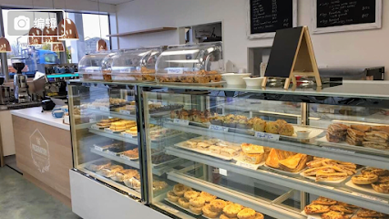
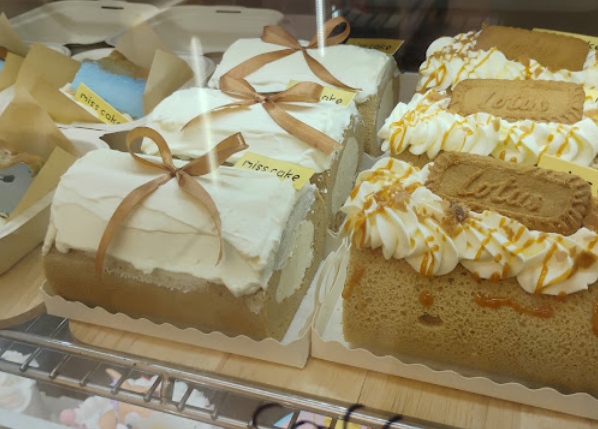

Daydream Café

Image source: Google Maps
Location:
247 Waimairi Road, Ilam, Christchurch 8041
Food Type:
Cafe & Brunch
Price range:
$10-20
Rate:
4.3/5 star
Sushiball House

Image source: Google Maps
Location:
201 Waimairi Road, Ilam, Christchurch 8041
Food Type:
Japanese Sushi
Price range:
$10-20
Rate:
4.8/5 star
Ilam Bakery

Image source: Google Maps user upload @Jen-Yi
Location:
213 Waimairi Road, Ilam, Christchurch 8041
Food Type:
Cafe & Brunch
Price range:
$10-20
Rate:
4.3/5 star